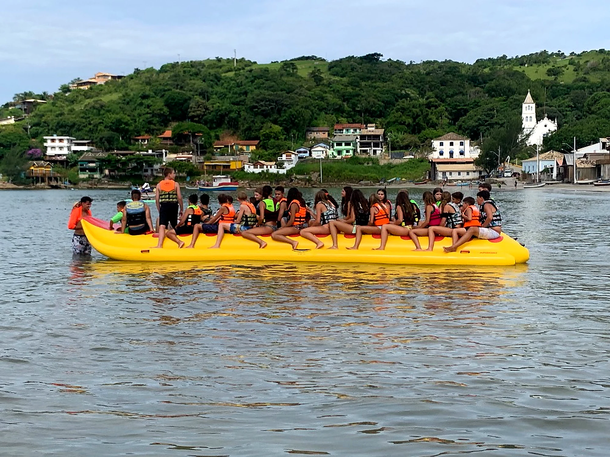
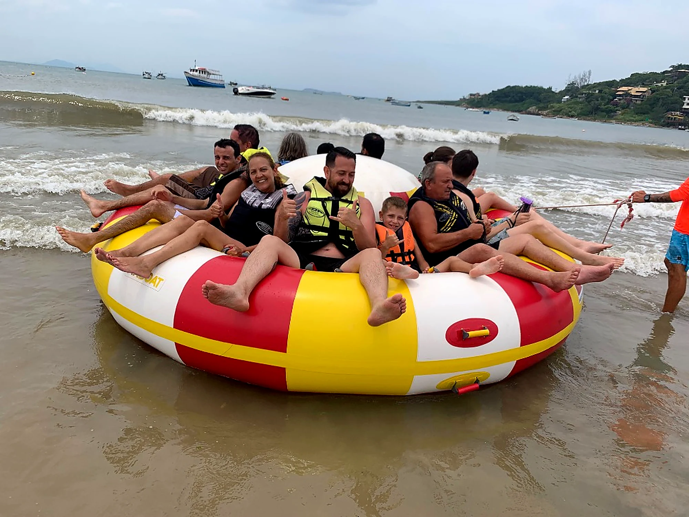
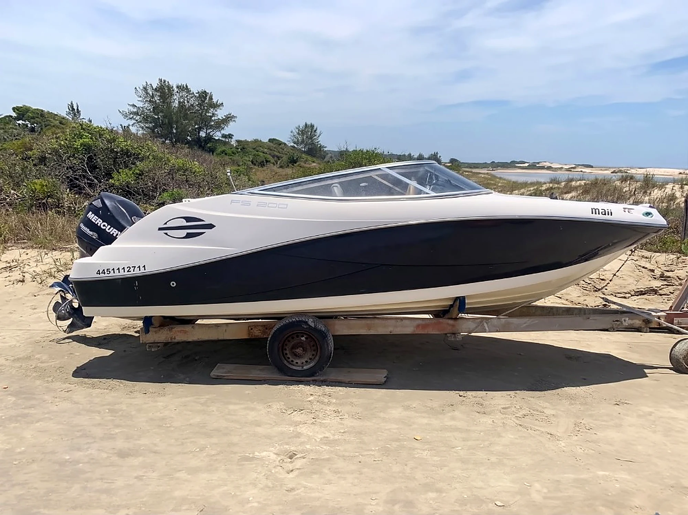
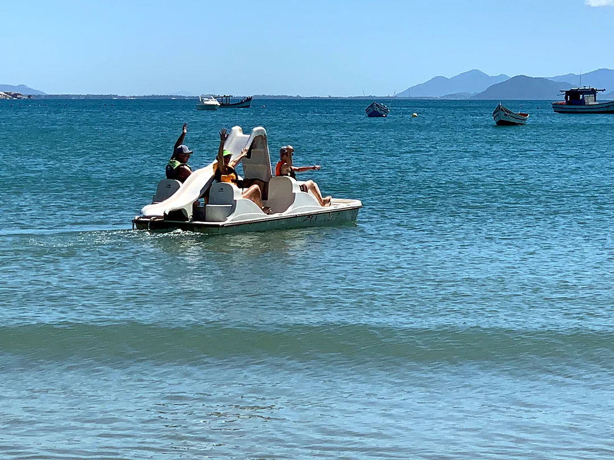
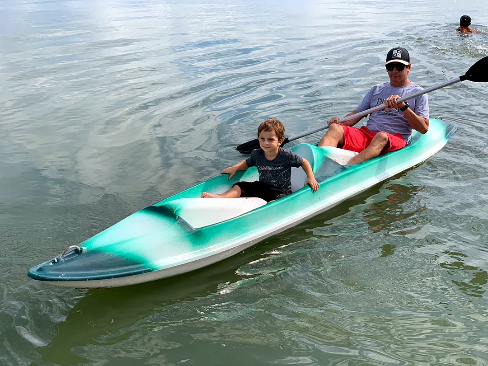
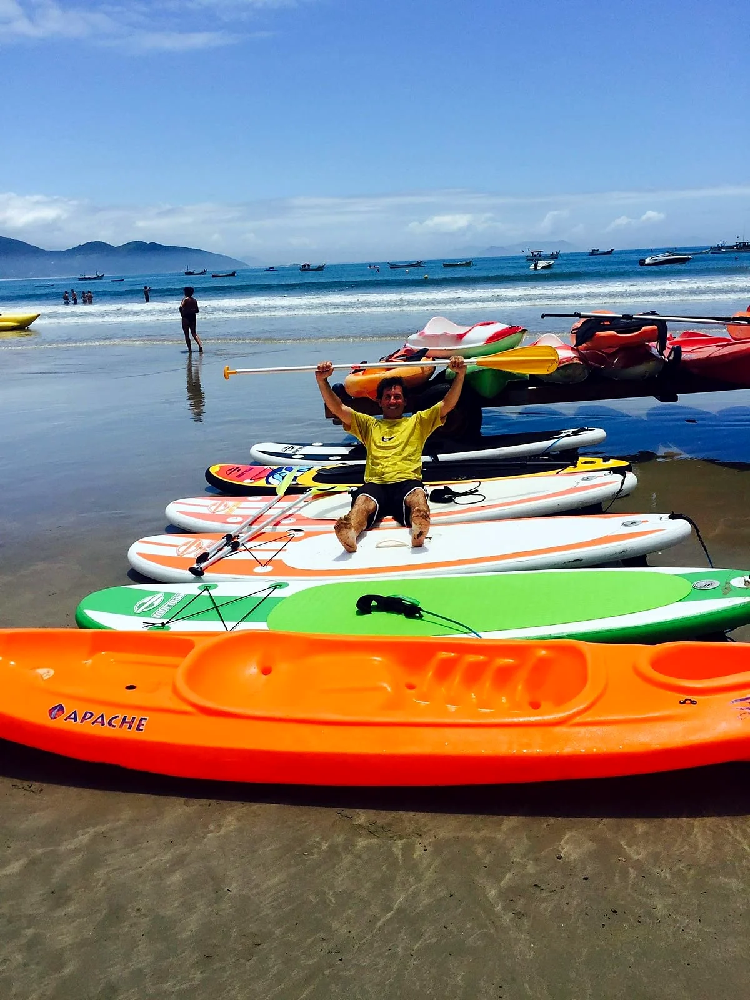
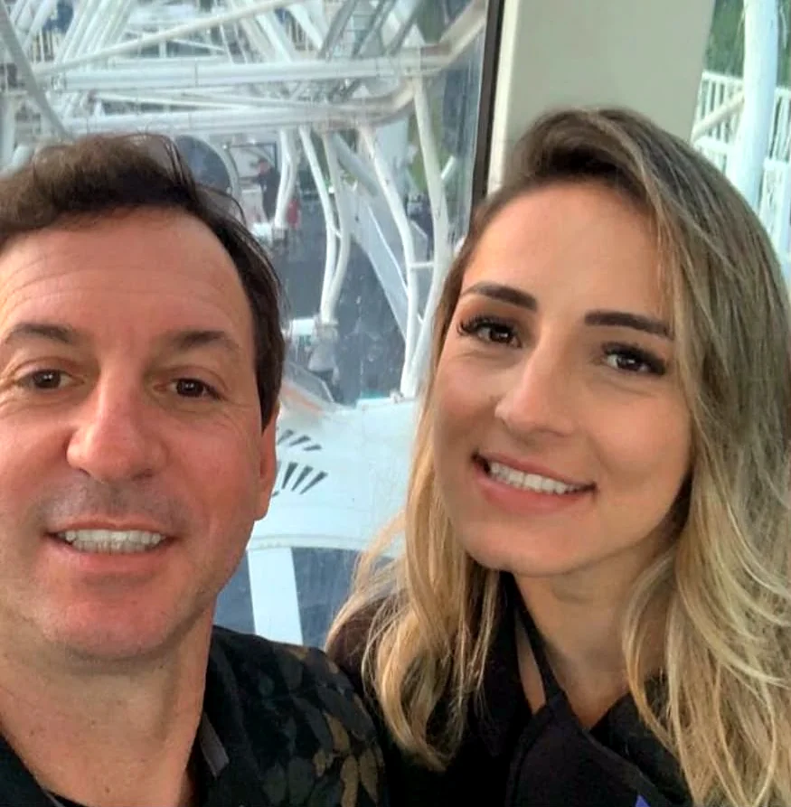
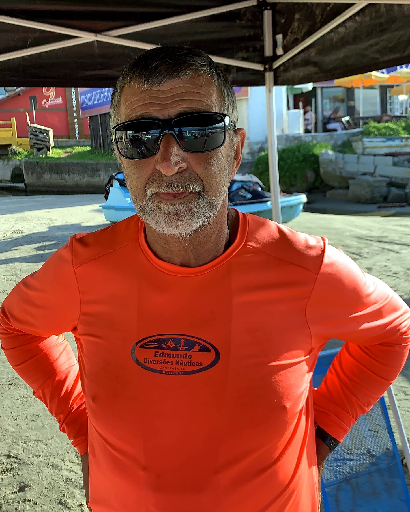
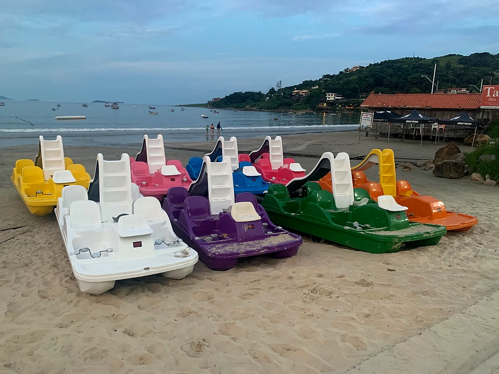
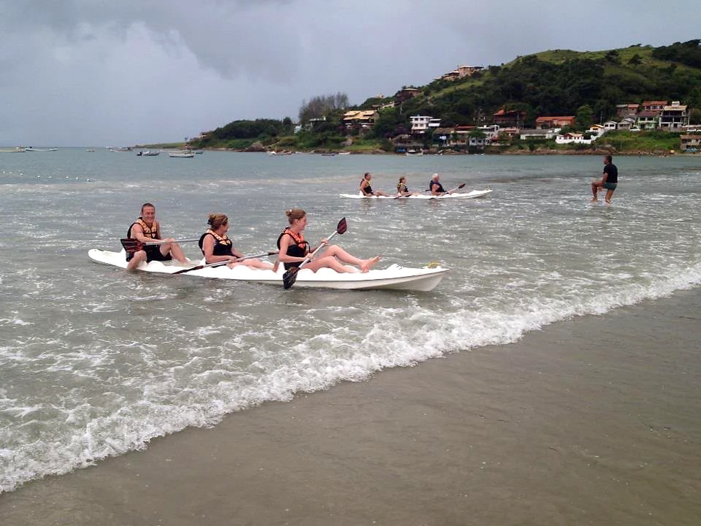

Banana Boat
Até 20 pessoas no mesmo passeio.

Banana Boat, Disco Boat, lancha, pedalinho, caiaque e SUP, direto da areia.
Águas calmas da Praia Central.

Até 20 pessoas no mesmo passeio.

Gira, desliza e arranca risada.

Lancha de 20 pés pela costa.

A alegria da criançada e da família.

Individual, duplo ou triplo.

Remar em pé, em águas calmas.
Vai pronta para o WhatsApp.
Procure a camisa laranja na beira da praia.






Há 32 anos na Praia Central de Garopaba, com atendimento da família.
Até 20 lugares. Dá para levar a família e a turma toda.
Pelo WhatsApp do Edmundo ou da Mônica, ou direto na praia com a equipe de camisa laranja.